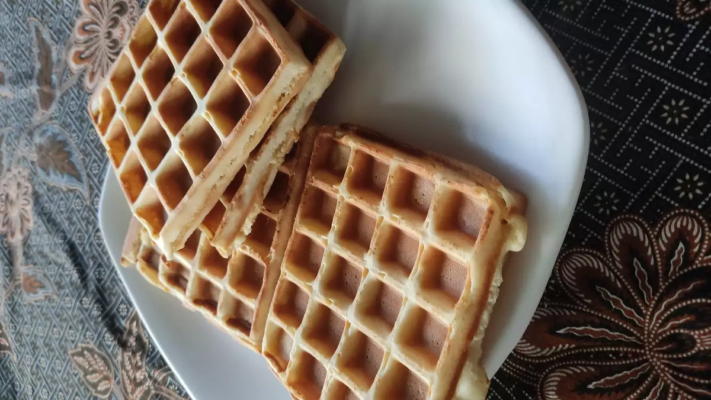

Classic Waffles

Classic Waffles
A lovely,crispy waffle perfect for the morning.
Ingredients
- 2 cups all-purpose flour
- 1 teaspoon salt
- 4 teaspoons baking powder
- 2 tablespoons white sugar
- 2 eggs
- 1 1/2 cups warm milk
- 1/3 cup butter, melted
- 1 teaspoon vinilla extract
Steps
Step 1
- In a large bowl, mix together flour, salt, baking powder and sugar; set aside. Preheat waffle iron to desired temperature
Step2
- In a seperate bowl, beat the eggs. Stir in the milk, buteerand vinilla. Pour the milk mixture into the flour mixture; beat until blended.
Step 3
- Ladle the batter into a preheated waflle iron. Cook the waffles until golden and crisp. Serve immediatley